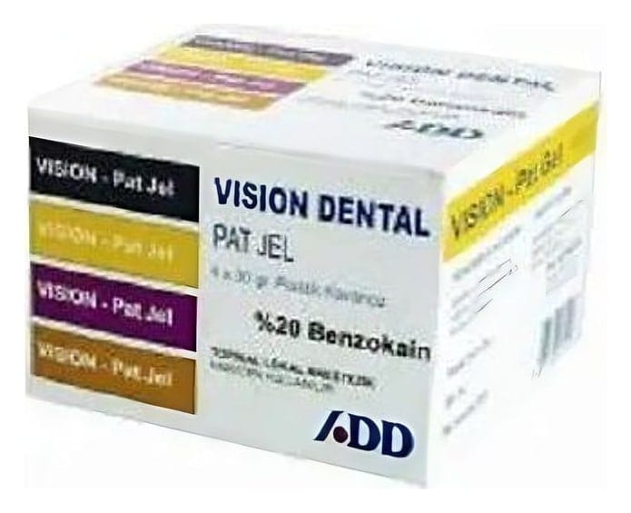

Vision Dental Pat Jel

Ne için kullanılır
KT · Bölüm 1VISION DENTAL PAT JEL , benzokain içeren bir ilaçtır. Benzokain, ester tipi bir lokal anesteziktir. VISION DENTAL P AT JEL , • Diş ve dişeti tedavilerinde anestezi oluşturmak amacıyla diş hekimliğinde, • Ağız içi, dişeti ve çevresindeki aft ve yaralanmalarda, • Diş eti hastalarında, • Diş tedavisinin yol açtığı ağrılarda, • Takma dişlerin neden olduğu dişeti ve ağız içi yaralanmalarında, • Ağız içi, bademcik ve farenjit enfeksiyonlarında ağrının geçici giderilmesinde kullanılmaktadır. • Fiberoptik gastroskopi, laringoskopi, protoskopi ve sigmoskopi gibi cerrahi uygulamalarında uygulanan aletin geçişini kolaylaştırmak amacıyla kayganlaştırıcı ve topikal anestezik olarak kullanılır.
• Nasogastrik tüplerin yerleştirilmesi esnasında yutak (farenks) ve soluk borusundaki (trakea) tıkanma refleksin bastırılmasında da etkilidir.
VISION DENTAL PAT JEL , % 20 oranında benzokain içeren 4 X 30 gr.lık plastik kavanoz şeklindeki ambalajlarda satılmaktadır.